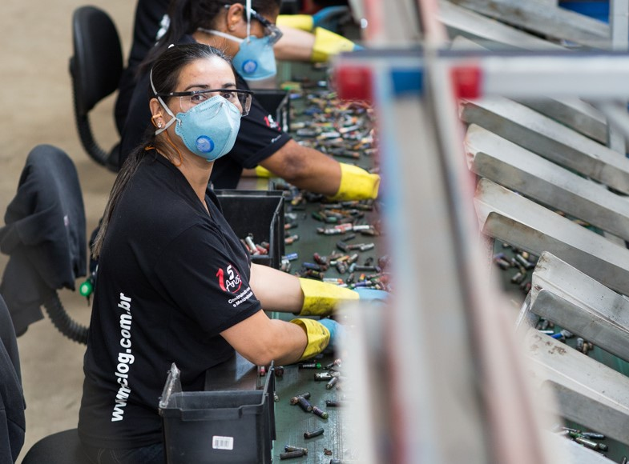

O que é o lixo eletrônico?
Pequenos equipamentos e eletroportáteis: torradeiras, batedeiras, aspiradores de pó, ventiladores, mixers, secadores de cabelo, ferramentas elétricas, calculadoras, câmeras digitais, rádios, etc. Equipamentos de informática e telefonia: computadores, tablets, notebooks, celulares, impressoras, monitores e outros.
Consequências do descarte feito de maneira errada
Em suma, o descarte incorreto de E-lixos impacta a saúde pública devido aos metais pesados, gera danos ao meio ambiente através da contaminação de solos, lençóis freáticos e os organismos da fauna e da flora e, além disso, reduz o tempo de vida dos aterros sanitários.
O lixo eletrônico é perigoso?
O lixo eletrônico também é perigoso para a saúde. Doenças como câncer, problemas respiratórios e até feridas nos órgãos internos podem acometer pessoas que tenham contato direto com as substâncias tóxicas contidas no e-lixo.
Como descartar da maneira correta
Se você for descartar eletroeletrônicos, não desmonte os produtos. Coloque-o no coletor inteiro. Se o aparelho tiver bateria de lítio, como em celulares, notebook, etc, deixe-a dentro do produto e descarte na área para eletroeletrônicos.